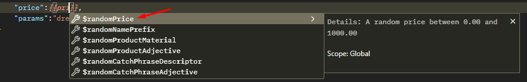
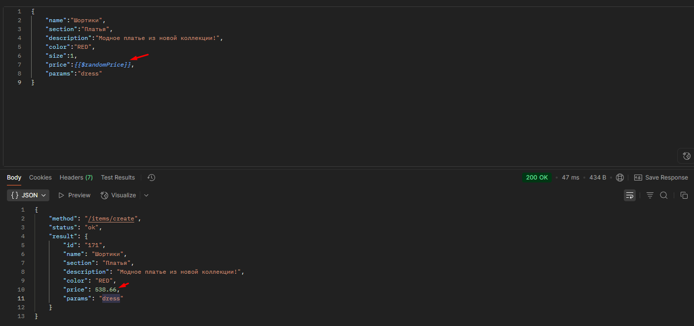
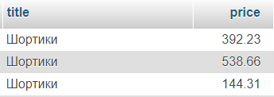
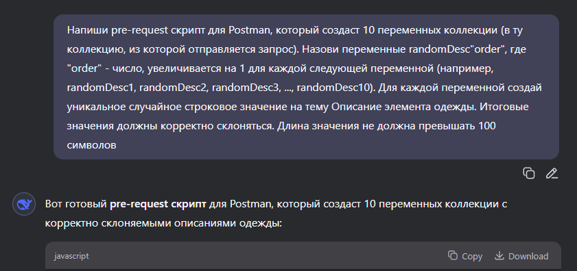
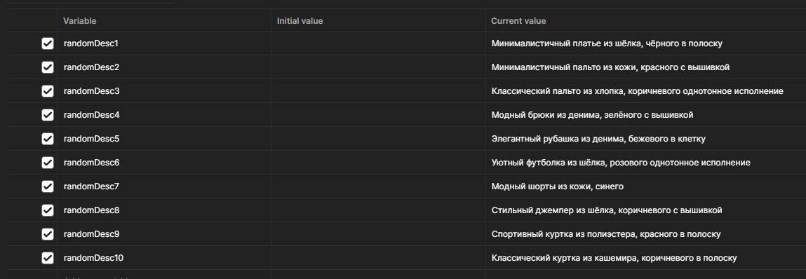
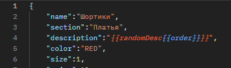
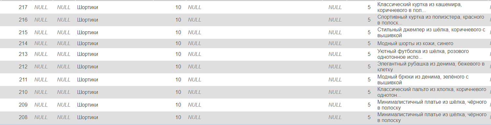

Зафиналим техническую составляющую тестирования веб-проектов. В этой практической работе проведем интеграционное тестирование тестового интернет-магазина, подергаем ручки и попишем SQL запросы в базу.
ℹ️
Рекомендация
Убедись что все предыдущие ДЗ со статусом «принято», если сейчас есть непонимание какой-то из тем — разберись, задай вопросы в чате.
Какие ключевые знания и навыки понадобятся для практики: REST API, Postman, SQL
В процессе выполнения нормально возвращаться к предыдущим урокам, гуглить инфу и смотреть дополнительные видео если что не понятно, задавать вопросы в чате тг или пользоваться ChatGPT. Главная задача этой практики — попробовать на тестовом проекте потестить бэк через Postman в связке с БД, посмотреть как ходят данные, половить баги.
🧠
Чит-листы для тестирования HTTP методов
Непосредственно перед тем как тестить разные методы, можешь посмотреть видео по чит-листам (подсказкам). Так ты сможешь увеличить покрытие API проверками.
Видео: чит-листы для тестирования HTTP методов
🛒Описание задачи
Представь ты тестируешь интернет-магазин, бэкенд-разраб выкатил все 4 круд ручки для работы с товарами, однако на фронте реализован пока только просмотр товара. Тебе нужно проверить, что на стороне бэка всё ок и крудовские ручки работают согласно документации, данные в БД заносятся корректно.
Увы ты попал на проект, где плохо описана дока, а аналитик неопытный джун. Единственное что ты знаешь — у тебя на проекте RESTful API, а значит нужно внимательнее отнестись к стилю API, который реализовал разраб, и подсветить несостыковки.
Перед выполнением задач, попробуй сначала просто подергать ручки, посмотреть в БД. Потыкай доку, постман, создай коллекцию для будущих запросов, БД минут 20-30. Проведи свой ресерч.
Создание товара
ДЗ №1
API: используя Postman и доку, в коллекции сформировать сьют (папку) из 5 запросов:
1 позитивная проверка, создание валидного товара (обязательные поля заполнены, типы данных соблюдены)
4 негативных проверки, создание невалидного товара (любые отклонения от требований и REST API на твое усмотрение)
покрыть необходимыми тестами в post-response (минимум 2). Если не знаешь как написать тест, используй deepseek или сниппеты (и пересмотри в видео по постману)
запустить сьют (Run), сделать скрин во вкладке View Results
БД: используя SQL запрос, проверить, добавились ли товары в БД.
Баги оформлять в виде Название-ОР-ФР-(Комментарий), комментарий по желанию если есть мысли.
В ответ пришли скрин результатов рана и SQL запрос, список багов. Не трать на задачу больше 1 часа.
Просмотр товара
ДЗ №2
API: сформировать сьют из 3 запросов:
1 позитивная проверка
2 негативные проверки
покрыть тестами в post-response (минимум 2)
запустить сьют, сделать скрин во вкладке View Results
БД: чтение ты уже проверил в первом задании, здесь ничего не надо.
В ответ пришли скрин результатов рана и список багов. Не трать на задачу больше 30 минут.
запустить сьют, сделать скрин во вкладке View Results
БД: используя SQL запрос, проверить, изменилась ли ранее добавленная запись.
В ответ пришли скрин результатов рана и SQL запрос, список багов. Не трать на задачу больше 1 часа.
Удаление товара
ДЗ №4
API: сформировать сьют из 3 запросов:
1 позитивная проверка
2 негативные проверки (одна из них обязательно повторное удаление того же id)
покрыть тестами в post-response (минимум 2)
запустить сьют, сделать скрин во вкладке View Results
БД: используя SQL запрос, проверить, удалилась ли запись из таблицы.
В ответ пришли скрин результатов рана и SQL запрос, список багов. Также пришли скрин всей коллекции (раскрой все 4 папки, чтобы было видно запросы). Не трать на задачу больше 30 минут.
Отлично, ты протестил ручки, сформировал простые баг-репорты и параллельно глядел в БД. Как ты видишь ничего сложного в интеграционном тестировании нет, ты посмотрел как данные ходят в бэк, с бэка в БД.
🎲Доп. материал: заведение тестовых данных
🧠
Доп. материал
Далее ниже идет дополнительный материал по постману, если хочешь копнуть в автоматическое наполнение БД тестовыми данными, то приступай, в конце контрольное ДЗ :)
Часто на проектах с тестированием бэка ты будешь сам заводить тестовые данные. И как ты понял из заданий выше, делать это можно как через API, так и через БД (в тестовой БД разрешен только оператор SELECT, поэтому с остальными мы не работали).
Например, для корректности тестирования данной функциональности мы можем создать 100 товаров. Какие есть способы?
Через фронт понятно, что дело это долгое, каждый раз тыкать UI и сохранять изменения
Через БД казалось бы тоже необходимо писать длинный SQL запрос на добавление 100 строк, но благодаря ctrl+C ctrl+V уже ощутимо быстрее, чем через фронт
Остается бэк и его API методы, которые мы можем засунуть в постман в прогон коллекции. Но и здесь нужно сидеть заполнять самому все переменные?
ℹ️
Автоматизация тестовых данных в Postman
Конечно мы не будем сидеть и писать всё руками, в постмане есть встроенный рандомайзер через переменную, а также pre-request и post-response вкладки, куда можем вставить js-код с любой логикой. И с помощью этих способов мы можем сгенерировать случайные тестовые данные.
Простой способ генерации рандомных значений: встроенный рандомайзер
В постмане есть встроенный рандомайзер популярных групп значений (аббревиатуры, имена, цены, даты и так далее). Объявляется он через те же переменные, достаточно написать синтаксис объявления переменных и начать писать имя интересующей группы значений (например, price — цена). И постман предложит переменную-рандомайзер, которая при каждом запросе будет генерировать случайное значение в соответствии со своим описанием.

В JSON в теле запроса в значении ключа price указываю постмановскую переменную $randomPrice. Детали: случайная цена между 0 и 1000 (float)

Отправил запрос — постман сгенерировал мне цену 538.66. С каждым последующим запросом будет генерироваться новая цена

Вот что получилось в БД (отправил 3 запроса)
Более сложный способ генерации рандомных значений
Что если мы хотим так же быстро сформировать список тестовых данных и отталкиваться уже от него, а не генерировать данные «вслепую»? Тогда нам нужен рукописный скрипт, который поможет создать тестовые данные. Можем воспользоваться deepseek и накидать промт для поля «description» — зарандомим 10 разных описаний нашей одежды.

Пример промта в дипсик. Осталось грузануть в предзапрос и отправить запрос. Здесь на самом деле неважно, этот скрипт pre-request или post-response, так как с самим запросом мы не работаем, а лишь создаем набор переменных коллекций

Вот такие переменные зарандомил ИИшный скрипт, выглядят как описания товаров на алиэкспресс. Но конечно совершенствовать скрипт можно бесконечно. Все-таки лучше таблица со словами (какой-нибудь json), откуда скрипт будет рандомно брать слова и обрабатывать их каким-либо образом

Добавил переменную коллекции order прямо внутрь названия другой переменной, начальное значение = 1. order будет отвечать за номер переменной randomDesc (от 1 до 10), а в post-response напишу скрипт для увеличения этого номера на 1. Так, у меня в каждом следующем запросе будет использоваться разная переменная. Создам прогон на 10 итераций

Заглянем в базу, увидим что все наши рандомные переменные успешно проставились
Автоматизированное заведение тестовых данных
ДЗ №5*
Задача: создать 30 товаров с автосгенерированными тестовыми данные для полей name, description, price. Для поля section указать значение Test. После напиши SQL запрос на вывод обозначенных полей, например, отсортируй last_id по убыванию и ограничь ответ 30 строками. Должны остаться только твои товары.
Приложить скрины тела запроса, списка переменных (если пошел сложным путем), веб-морды где виден твой SQL запрос и ответ на него.